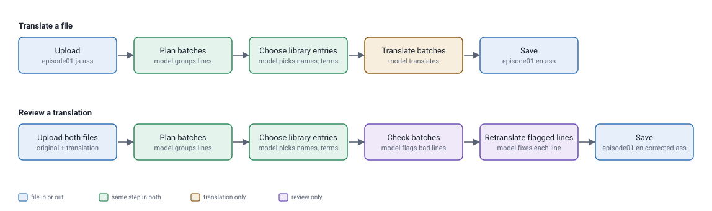
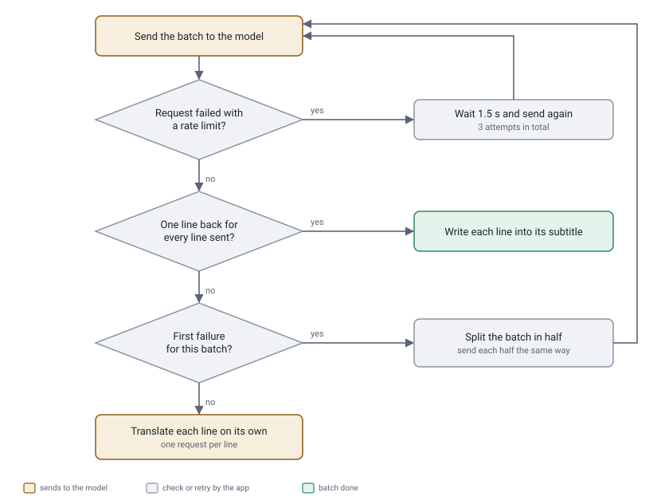

File translation and review
How a subtitle file is translated by the AI model, and how an existing translation is checked and corrected.
Overview
Translating and reviewing share their first two steps. The steps between upload and save are tasks run by the orchestrator.

A review needs the original file and its translation, and both must have the same number of subtitle lines. The app checks this before any request is sent to the model.
How the AI model is used
Subtitle lines are always sent numbered, with the speaker's name from the subtitle file, so the model can say which line it means:
12. Aoi: 先輩、おはようございます！
13. Ren: おう、早いな。The reply is plain text, so the app never trusts it as-is. When it asks for JSON, it checks the structure and every line number. When it asks for translated lines, it counts them. What happens when a check fails is covered under Handling bad AI output.
Planning, choosing library entries and reviewing use a low temperature (0.1), so the model's answers are as consistent as possible. Translating and retranslating use the temperature set on the Settings page.
Planning batches
Translating one line at a time loses context: a reply only makes sense next to the question, and a joke next to its setup. Sending the whole file at once is too much for one request. So the model first splits the file into batches, each a scene or conversation that belongs together.
It receives every numbered line of the file and replies with a plan:
{
"batches": [
{"start_index": 1, "end_index": 57, "reason": "A continuous off-day conversation."},
{"start_index": 58, "end_index": 117, "reason": "A continuous photoshoot and follow-up conversation."},
…
]
}The app checks that the batches start at line 1, end at the last line, and cover every line exactly once, in order, with no gaps or overlaps. If the plan breaks any of these, the job stops.
Translation also has a maximum batch size, set on the Translate page. Every batch over the limit goes back to the model, together with its original reason, to be split into smaller consecutive batches. The split is checked the same way. If the model's split is invalid, the app splits the batch into equal parts itself.
Review keeps the batches exactly as the model planned them. The batch size on the page is not applied.
Using the series library
The library stores each series' characters (names, aliases, personality, relationships, history) and glossary terms with their agreed translations. Sending all of it with every request would be long and mostly irrelevant, so the model first picks what this episode needs.
It receives the whole numbered file plus a list of every character and term in the series, and replies with the ones that appear:
{
"character_ids": ["aoi", "ren"],
"glossary_ids": ["senpai"]
}The chosen entries are written out as a context block, which is added to the instructions of every later request in the job:
- characters: Aoi
Aliases: Aoi-chan
Personality: Cheerful
Relationship with Ren: Childhood friend.
- glossary: 先輩 → senpai (Keep untranslated.)If no series was selected, or the series has no characters or terms, this step is skipped without calling the model.
Translating or reviewing
After the shared steps, the two jobs do different work on the planned batches.
Each batch is sent as one request. The lines are numbered from 1 within the batch and include how long each line is on screen:
1. Aoi (2.10s): 先輩、おはようございます！
2. Ren (1.45s): おう、早いな。
3. Aoi (2.80s): 今日は文化祭の準備ですから！The instructions tell the model to:
- return a natural translation only, with no labels, notes or speaker names;
- keep Japanese honorifics on names, romanised (葛城さん → Katsuragi-san);
- keep the tone, intent and formality of each speaker;
- use shorter phrasing for lines that are on screen briefly;
- follow the library context block.
The model replies with one line per line sent:
Good morning, senpai!
Hey, you're early.
We've got school festival prep today!Reply lines are matched to subtitle lines in order, so the counts must agree. Each translation replaces the text of its subtitle line; timing and speaker are kept. Line breaks inside a subtitle become spaces.
After the last batch, any line wrapped entirely in quotation marks or asterisks has them removed, because models sometimes add them.
Each batch is sent with the original lines and the translated lines side by side, numbered by their position in the file:
<ORIGINAL_LINES>
12. Aoi: 先輩、おはようございます！
13. Ren: おう、早いな。
</ORIGINAL_LINES>
<TRANSLATED_LINES>
12. Aoi: Good morning, Ren!
13. Ren: Hey, you're early.
</TRANSLATED_LINES>The model is told to flag only real problems: wrong or missing meaning, added meaning, wrong tone or formality, names, terms or honorifics that don't match the library, and phrasing that changes the meaning. It is told not to flag lines just because other wording is possible. It replies with the lines to fix:
{
"corrections": [
{"index": 12, "reason": "先輩 should be kept as the honorific senpai, not replaced with the name Ren."}
]
}Line numbers must fall inside the batch. If the same line is flagged more than once, the reasons are combined.
Each flagged line is then retranslated on its own. The model receives the original line, the current translation and the reason, and replies with one corrected line, which replaces the old translation:
<LINE_INDEX>12</LINE_INDEX>
<ORIGINAL_LINE>Aoi: 先輩、おはようございます！</ORIGINAL_LINE>
<CURRENT_TRANSLATED_LINE>Aoi: Good morning, Ren!</CURRENT_TRANSLATED_LINE>
<REVIEW_REASON>先輩 should be kept as the honorific senpai, not replaced with the name Ren.</REVIEW_REASON>Good morning, senpai!Handling bad AI output
A translated batch that comes back wrong is retried in smaller pieces rather than failing the job:

Any other error from the request is treated the same as a wrong line count. Translating a line on its own uses the single-line instructions and has no further fallback: if that request fails, the job stops.
If all three attempts hit a rate limit, the batch is currently skipped without an error, and its lines are saved untranslated.
Every other failure:
| Step | Problem | What happens |
|---|---|---|
| Planning batches | Invalid JSON, or lines missed or covered twice | The job stops. |
| Splitting a large batch | Invalid split | The batch is split into equal parts instead. |
| Choosing library entries | Invalid JSON | The job stops. |
| Checking batches | Invalid JSON, or a line number outside the batch | The job stops. |
| Retranslating a line | Request fails | The job stops. |
When the job stops, the error is shown on the page and nothing is saved. The run's log folder keeps what the model returned:
| File | Contents |
|---|---|
01-plan-translation-batches.json | The batch plan. |
02-split-oversized-batches.json | Each split batch, and whether the model or the even split was used. |
03-review-translated-batches.json | Every flagged line with its reason, original and translation. |
03-review-translated-batch-failures.json | The batch and raw reply that could not be read. |
04-translate-file-batch-failures.json | Each batch that was split or fell back to line-by-line, with the lines sent and the lines returned. |
04-retranslate-reviewed-lines.json | Each corrected line, before and after. |
Saving the result
| Job | Input | Saved as |
|---|---|---|
| Translate | episode01.ja.ass | files/outputs/translated/episode01.en.ass |
| Review | episode01.en.ass | files/outputs/reviewed/episode01.en.corrected.ass |